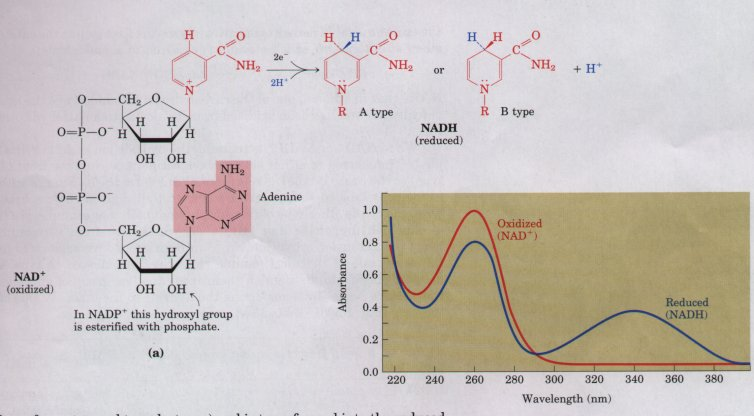
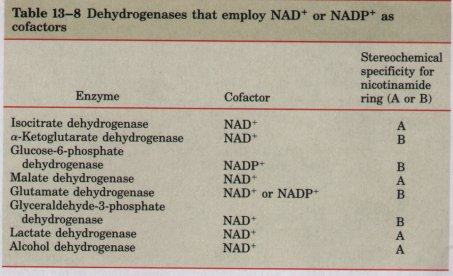
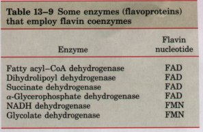
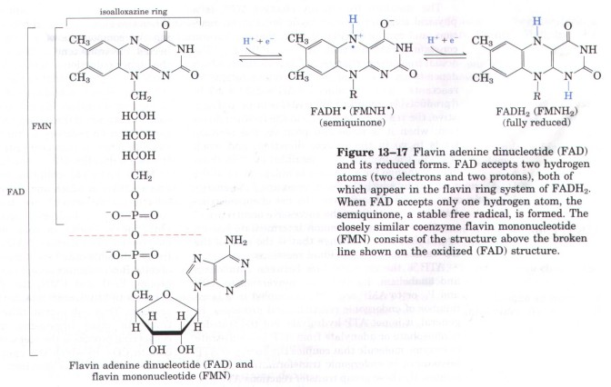

NADH + H+
NADH + H+ 
Figure 13-16 (a) Nicotinamide adenine dinucleotide (NAD+) and its phosphorylated analog NADP+ undergo reduction to NADH or NADPH, accepting a hydride ion (two electrons and one proton) from an oxidizable substrate. The hydride ion may be added to either the front (A type) or the back (B type) of the planar nicotinamide ring (see Table 13-8). (b) The UV absorption spectra of NAD+ and NADH. Reduction of the nicotinamide ring produces a new, broad absorption band with a maximum at 340 nm. The production of NADH during an enzyme-catalyzed oxidation can be conveniently followed by observing the appearance of the absorbance at 340 nm.
Nicotinamide adenine dinucleotide (NAD+ in its oxidized form) and its close analog nicotinamide adenine dinucleotide phosphate (NADP+) are composed of two nucleotides joined through their phosphate groups by a phosphoric acid anhydride bond (Fig. 13-16). Because their nicotinamide ring resembles pyridine, these compounds are sometimes called pyridine nucleotides. The vitamin niacin provides the nicotinamide moiety for the synthesis of the pyridine nucleotides.
Both coenzymes undergo reversible reduction of the nicotinamide ring (Fig. 13-16). As a substrate molecule undergoes oxidation (dehydrogenation), giving up two hydrogen atoms, the oxidized form of the nucleotide (NAD+ or NADP+) accepts a hydride ion ( :H-, the equivalent of a proton and two electrons) and is transformed into the reduced form (NADH or NADPH). The second H+ removed from the substrate is released to the aqueous solvent. The half reaction for each nucleotide is therefore
NAD+ + 2e- + 2H+ NADH + H+
NADP+ + 2e- + 2H+ NADPH + H+
In the abbreviations NADH and NADPH, the H denotes this added hydride ion, and the loss of the positive charge when H- is added to the oxidized form is also made clear. To refer to one of these nucleotides without specifying its oxidation state, we will use NAD or NADP.
The total concentration of NAD+ + NADH in most tissues is about 10-5 M; that of NADP+ + NADP is about 10 times lower. In many cells and tissues, the ratio of NAD+ (oxidized) to NADH (reduced) is high, favoring hydride transfer to NAD+ to form NADH; by contrast, NADPH (reduced) is generally present in greater amounts than its oxidized form, NADP+, favoring hydride transfer from NADPH. This reflects the specialized metabolic roles of the two cofactors: NAD+ generally functions in catabolic oxidations, and NADPH is the usual cofactor in anabolic reductions. A few enzymes will use either cofactor, but most show a strong preference for one cofactor over the other. This functional specialization allows a cell to maintain two distinct pools of electron carriers in the same cellular compartment.
More than 200 enzymes are known to catalyze reactions in which NAD+ or NADP+ accepts a hydride ion from some reduced substrate or NADH or NADPH donates a hydride ion to an oxidized substrate. The general reactions are
AH2 + NAD+  A + NADH + H+
A + NADH + H+
AH2 + NADP+ A + NADPH + H+
where AH2 is the reduced substrate and A the oxidized substrate. The general name for enzymes of this type is oxidoreductase (see Table 8-3); they are also commonly called dehydrogenases. For example, the enzyme alcohol dehydrogenase catalyzes the first step in the catabolism of ethanol, in which ethanol is oxidized to acetaldehyde:
CH3CH2OH + NAD+ CH3CHO + NADH + H+
Notice that in ethanol, one of the carbon atoms has undergone the loss of hydrogen and has been oxidized from an alcohol to an aldehyde (see Fig. 13-14).
When NAD+ or NADP+ is reduced, the hydride ion could in principle be transferred to either side of the nicotinamide ring: the front (A type) or the back (B type) as represented in Figure 13-16. Studies with isotopically labeled substrates have shown that a given enzyme catalyzes one or the other type of transfer, but not both. For example, yeast alcohol dehydrogenase and lactate dehydrogenase from vertebrate heart both transfer a hydride ion from their respective substrates to the same side of the nicotinamide ring; they are classed as type A dehydrogenases to distinguish them from another group of enzymes that reduce NAD+ by transferring the hydride to the other (B) side of the ring (Fig. 13-16; Table 13-8).

The association between a given dehydrogenase and NAD or NADP is relatively loose; the cofactor readily diffuses from the surface of one enzyme to that of another, acting as a water-soluble carrier of electrons from one metabolite to another. For example, in the production of alcohol during fermentation of glucose by yeast cells, a hydride ion is removed from glyceraldehyde- 3- phosphate by one enzyme (glyceraldehyde- 3- phosphate dehydrogenase) and transferred to NAD+. The NADH thereby produced then leaves the enzyme surface and dif fuses to another enzyme, alcohol dehydrogenase, which transfers a hydride ion from NADH to acetaldehyde, producing ethanol:
| (1) | Glyceraldehyde-3-phosphate + NAD+
3-phosphoglycerate +NADH + H+ |
| (2) | Acetaldehyde + NADH + H+ ethanol + NAD+ |
| Sum: | Glyceraldehyde-3-phosphate + acetaldehyde
3-phosphoglycerate + ethanol |
Notice that in the overall reaction there is no net production or consumption of NAD+ or NADH; the cofactors function catalytically, being recycled repeatedly without a net change in the concentration of NAD+ + NADH.

Flavoproteins (Table 13-9) are enzymes that catalyze oxidationreduction reactions using either flavin mononucleotide (FMN) or flavin adenine dinucleotide (FAD) as cofactor (Fig. 13-17). These cofactors are derived from the vitamin riboflavin. The fused ring structure of flavin nucleotides (the isoalloxazine ring) undergoes reversible reduction, accepting either one or two electrons in the form of hydrogen atoms (electron plus proton) from a reduced substrate; the reduced forms are abbreviated FADH2 and FMNH2. When a fully oxidized flavin nucleotide accepts only one electron (one hydrogen atom), the semiquinone form of the isoalloxazine ring (Fig. 13-17) is produced. Because flavoproteins can participate in either one- or two-electron transfers, this class of proteins is involved in a greater diversity of reactions than the NAD-linked dehydrogenases. As with nicotinamide coenzymes (Fig. 13-16), the reduction of flavin nucleotides is accompanied by a change in a major absorption band. This change can often be used in assaying a reaction involving a flavoprotein.The flavin nucleotide in most flavoproteins is bound rather tightly and, in some enzymes such as succinate dehydrogenase, covalently. Such tightly bound cofactors are properly called prosthetic groups. They do not carry electrons by diffusing away from one enzyme and to the next; rather, they provide a means by which the flavoprotein can temporarily hold electrons while it catalyzes electron transfer from a reduced substrate to an electron acceptor. One important feature of the flavoproteins is the variability in standard reduction potential (E'0) of the bound flavin nucleotide; tight association between the enzyme and prosthetic group confers on the flavin ring a reduction potential typical of the specific flavoprotein, sometimes quite different from that of the free flavin nucleotide. Flavoproteins are often very complex; some have, in addition to a flavin nucleotide, tightly bound inorganic ions (iron or molybdenum, for example) capable of participating in electron transfers.
